TartanVO: A Generalizable Learning-based VO
Wenshan Wang∗ Carnegie Mellon University
Yaoyu Hu Carnegie Mellon University
Sebastian Scherer Carnegie Mellon University
Abstract: We present the first learning-based visual odometry (VO) model, which generalizes to multiple datasets and real-world scenarios, and outperforms geometry-based methods in challenging scenes. We achieve this by leveraging the SLAM dataset TartanAir, which provides a large amount of diverse synthetic data in challenging environments. Furthermore, to make our VO model generalize across datasets, we propose an up-to-scale loss function and incorporate the camera intrinsic parameters into the model. Experiments show that a single model, TartanVO, trained only on synthetic data, without any finetuning, can be generalized to real-world datasets such as KITTI and EuRoC, demonstrating significant advantages over the geometry-based methods on challenging trajectories. Our code is available at https://github.com/castacks/tartanvo.
Keywords: Visual Odometry, Generalization, Deep Learning, Optical Flow
1 Introduction
Visual SLAM (Simultaneous Localization and Mapping) becomes more and more important for autonomous robotic systems due to its ubiquitous availability and the information richness of im ages [1]. Visual odometry (VO) is one of the fundamental components in a visual SLAM system. Impressive progress has been made in both geometric-based methods [2, 3, 4, 5] and learning-based methods [6, 7, 8, 9]. However, it remains a challenging problem to develop a robust and reliable VO method for real-world applications.
On one hand, geometric-based methods are not robust enough in many real-life situations [10, 11]. On the other hand, although learning-based methods demonstrate robust performance on many visual tasks, including object recognition, semantic segmentation, depth reconstruction, and optical flow, we have not yet seen the same story happening to VO.
It is widely accepted that by leveraging a large amount of data, deep-neural-network-based methods can learn a better feature extractor than engineered ones, resulting in a more capable and robust model. But why haven’t we seen the deep learning models outperform geometry-based methods yet? We argue that there are two main reasons. First, the existing VO models are trained with insufficient diversity, which is critical for learning-based methods to be able to generalize. By diversity, we mean diversity both in the scenes and motion patterns. For example, a VO model trained only on outdoor scenes is unlikely to be able to generalize to an indoor environment. Similarly, a model trained with data collected by a camera fixed on a ground robot, with limited pitch and roll motion, will unlikely be applicable to drones. Second, most of the current learning-based VO models neglect some fundamental nature of the problem which is well formulated in geometry-based VO theories. From the theory of multi-view geometry, we know that recovering the camera pose from a sequence of monocular images has scale ambiguity. Besides, recovering the pose needs to take account of the camera intrinsic parameters (referred to as the intrinsics ambiguity later). Without explicitly dealing with the scale problem and the camera intrinsics, a model learned from one dataset would likely fail in another dataset, no matter how good the feature extractor is.
To this end, we propose a learning-based method that can solve the above two problems and can generalize across datasets. Our contributions come in three folds. First, we demonstrate the crucial effects of data diversity on the generalization ability of a VO model by comparing performance on different quantities of training data. Second, we design an up-to-scale loss function to deal with the scale ambiguity of monocular VO. Third, we create an intrinsics layer (IL) in our VO model enabling generalization across different cameras. To our knowledge, our model is the first learning-based VO that has competitive performance in various real-world datasets without finetuning. Furthermore, compared to geometry-based methods, our model is significantly more robust in challenging scenes. A demo video can be found: https://www.youtube.com/watch?v=NQ1UEh3thbU
2 Related Work
Besides early studies of learning-based VO models [12, 13, 14, 15], more and more end-to-end learning-based VO models have been studied with improved accuracy and robustness. The majority of the recent end-to-end models adopt the unsupervised-learning design [6, 16, 17, 18], due to the complexity and the high-cost associated with collecting ground-truth data. However, supervised models trained on labeled odometry data still have a better performance [19, 20].
To improve the performance, end-to-end VO models tend to have auxiliary outputs related to camera motions, such as depth and optical flow. With depth prediction, models obtain supervision signals by imposing depth consistency between temporally consecutive images [17, 21]. This procedure can be interpreted as matching the temporal observations in the 3D space. A similar effect of temporal matching can be achieved by producing the optical flow, e.g., [16, 22, 18] jointly predict depth, optical flow, and camera motion.
Optical flow can also be treated as an intermediate representation that explicitly expresses the 2D matching. Then, camera motion estimators can process the optical flow data rather than directly working on raw images[20, 23]. If designed this way, components for estimating the camera motion can even be trained separately on available optical flow data [19]. We follow these designs and use the optical flow as an intermediate representation.
It is well known that monocular VO systems have scale ambiguity. Nevertheless, most of the supervised learning models did not handle this issue and directly use the difference between the model prediction and the true camera motion as the supervision [20, 24, 25]. In [19], the scale is handled by dividing the optical flow into sub-regions and imposing a consistency of the motion predictions among these regions. In non-learning methods, scale ambiguity can be solved if a 3D map is available [26]. Ummenhofer et al. [20] introduce the depth prediction to correcting the scale-drift. Tateno et al. [27] and Sheng et al. [28] ameliorate the scale problem by leveraging the key-frame selection technique from SLAM systems. Recently, Zhan et al. [29] use PnP techniques to explicitly solve for the scale factor. The above methods introduce extra complexity to the VO system, however, the scale ambiguity is not totally suppressed for monocular setups especially in the evaluation stage. Instead, some models choose to only produce up-to-scale predictions. Wang et al. [30] reduce the scale ambiguity in the monocular depth estimation task by normalizing the depth prediction before computing the loss function. Similarly, we will focus on predicting the translation direction rather than recovering the full scale from monocular images, by defining a new up-to-scale loss function.
Learning-based models suffer from generalization issues when tested on images from a new environment or a new camera. Most of the VO models are trained and tested on the same dataset [16, 17, 31, 18]. Some multi-task models [6, 20, 32, 22] only test their generalization ability on the depth prediction, not on the camera pose estimation. Recent efforts, such as [33], use model adaptation to deal with new environments, however, additional training is needed on a per-environment or per-camera basis. In this work, we propose a novel approach to achieve cross-camera/dataset generalization, by incorporating the camera intrinsics directly into the model.
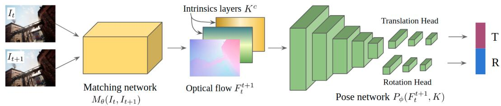
Figure 1: The two-stage network architecture. The model consists of a matching network, which estimates optical flow from two consecutive RGB images, followed by a pose network predicting camera motion from the optical flow.
3 Approach
3.1 Background
We focus on the monocular VO problem, which takes two consecutive undistorted images and estimates the relative camera motion , where is the 3D translation and denotes the 3D rotation. According to the epipolar geometry theory [34], the geometrybased VO comes in two folds. Firstly, visual features are extracted and matched from and Then using the matching results, it computes the essential matrix leading to the recovery of the up-to-scale camera motion
Following the same idea, our model consists of two sub-modules. One is the matching module , estimating the dense matching result from two consecutive RGB images (i.e. optical flow). The other is a pose module that recovers the camera motion from the matching result (Fig. 1). This modular design is also widely used in other learning-based methods, especially in unsupervised VO [13, 19, 16, 22, 18].
3.2 Training on large scale diverse data
The generalization capability has always been one of the most critical issues for learning-based methods. Most of the previous supervised models are trained on the KITTI dataset, which contains 11 labeled sequences and 23,201 image frames in the driving scenario [35]. Wang et al. [8] presented the training and testing results on the EuRoC dataset [36], collected by a micro aerial vehicle (MAV). They reported that the performance is limited by the lack of training data and the more complex dynamics of a flying robot. Surprisingly, most unsupervised methods also only train their models in very uniform scenes (e.g., KITTI and Cityscape [37]). To our knowledge, no learning-based model has yet shown the capability of running on multiple types of scenes (car/MAV, indoor/outdoor). To achieve this, we argue that the training data has to cover diverse scenes and motion patterns.
TartanAir [11] is a large scale dataset with highly diverse scenes and motion patterns, containing more than 400,000 data frames. It provides multi-modal ground truth labels including depth, segmentation, optical flow, and camera pose. The scenes include indoor, outdoor, urban, nature, and sci-fi environments. The data is collected with a simulated pinhole camera, which moves with random and rich 6DoF motion patterns in the 3D space.
We take advantage of the monocular image sequences , the optical flow labels , and the ground truth camera motions in our task. Our objective is to jointly minimize the optical flow loss and the camera motion loss . The end-to-end loss is defined as:
where λ is a hyper-parameter balancing the two losses. We use ˆ· to denote the estimated variable from our model.
Since TartanAir is purely synthetic, the biggest question is can a model learned from simulation data be generalized to real-world scenes? As discussed by Wang et al. [11], a large number of studies show that training purely in simulation but with broad diversity, the model learned can be easily transferred to the real world. This is also known as domain randomization [38, 39]. In our experiments, we show that the diverse simulated data indeed enable the VO model to generalize to real-world data.
3.3 Up-to-scale loss function
The motion scale is unobservable from a monocular image sequence. In geometry-based methods, the scale is usually recovered from other sources of information ranging from known object size or camera height to extra sensors such as IMU. However, in most existing learning-based VO studies, the models generally neglect the scale problem and try to recover the motion with scale. This is feasible if the model is trained and tested with the same camera and in the same type of scenario. For example, in the KITTI dataset, the camera is mounted at a fixed height above the ground and a fixed orientation. A model can learn to remember the scale in this particular setup. Obviously, the model will have huge problems when tested with a different camera configuration. Imagine if the camera in KITTI moves a little upwards and becomes higher from the ground, the same amount of camera motion would cause a smaller optical flow value on the ground, which is inconsistent with the training data. Although the model could potentially learn to pick up other clues such as object size, it is still not fully reliable across different scenes or environments.
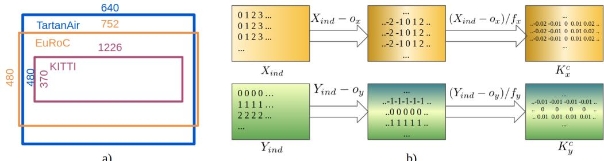
Figure 2: a) Illustration of the FoV and image resolution in TartanAir, EuRoC, and KITTI datasets. b) Calculation of the intrinsics layer.
Following the geometry-based methods, we only recover an up-to-scale camera motion from the monocular sequences. Knowing that the scale ambiguity only affects the translation , we design a new loss function for and keep the loss for rotation unchanged. We propose two up-to-scale loss functions for the cosine similarity loss and the normalized distance loss is defined by the cosine angle between the estimated and the label T:
Similarly, for , we normalize the translation vector before calculating the distance between the estimation and the label:
where is used to avoid divided by zero error. From our preliminary empirical comparison, the above two formulations have similar performance. In the following sections, we will use Eq 3 to replace in Eq 1. Later, we show by experiments that the proposed up-to-scale loss function is crucial for the model’s generalization ability.
3.4 Cross-camera generalization by encoding camera intrinsics
In epipolar geometry theory, the camera intrinsics is required when recovering the camera pose from the essential matrix (assuming the images are undistorted). In fact, learning-based methods are unlikely to generalize to data with different camera intrinsics. Imagine a simple case that the camera changes a lens with a larger focal length. Assume the resolution of the image remains the same, the same amount of camera motion will introduce bigger optical flow values, which we call the intrinsics ambiguity.
A tempting solution for intrinsics ambiguity is warping the input images to match the camera intrinsics of the training data. However, this is not quite practical especially when the cameras differ too much. As shown in Fig. 2-a, if a model is trained on TartanAir, the warped KITTI image only covers a small part of the TartanAir’s field of view (FoV). After training, a model learns to exploit cues from all possible positions in the FoV and the interrelationship among those cues. Some cues no longer exist in the warped KITTI images leading to drastic performance drops.
3.4.1 Intrinsics layer
We propose to train a model that takes both RGB images and camera intrinsics as input, thus the model can directly handle images coming from various camera settings. Specifically, instead of recovering the camera motion only from the feature matching , we design a new pose network , which depends also on the camera intrinsic parameters where and are the focal lengths, and and denote the position of the principle point.
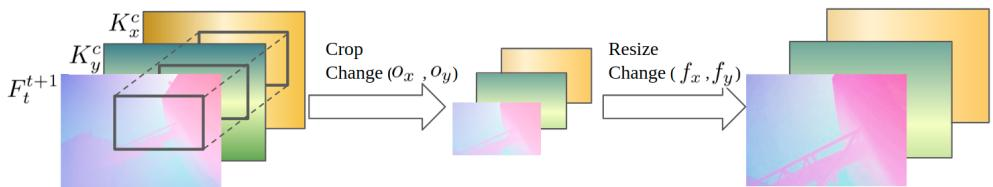
Figure 3: The data augmentation procedure of random cropping and resizing. In this way we generate a wide range of camera intrinsics (FoV to ).
As for the implementation, we concatenate an IL (intrinsics layer) (H and W are image height and width respectively) to before going into To compose , we first generate two index matrices and for the x and y axis in the 2D image frame (Fig. 2-b). Then the two channels of are calculated from the following formula:
The concatenation of and augments the optical flow estimation with 2D position information. Similar to the situation where geometry-based methods have to know the 2D coordinates of the matched features, provides the necessary position information. In this way, intrinsics ambiguity is explicitly handled by coupling 2D positions and matching estimations
3.4.2 Data generation for various camera intrinsics
To make a model generalizable across different cameras, we need training data with various camera intrinsics. TartanAir only has one set of camera intrinsics, where and . We simulate various intrinsics by randomly cropping and resizing (RCR) the input images. As shown in Fig. 3, we first crop the image at a random location with a random size. Next, we resize the cropped image to the original size. One advantage of the IL is that during RCR, we can crop and resize the IL with the image, without recomputing the IL. To cover typical cameras with FoV between to , we find that using random resizing factors up to 2.5 is sufficient during RCR. Note the ground truth optical flow should also be scaled with respect to the resizing factor. We use very aggressive cropping and shifting in our training, which means the optical center could be way off the image center. Although the resulting intrinsic parameters will be uncommon in modern cameras, we find the generalization is improved.
4 Experimental Results
4.1 Network structure and training detail
Network We utilize the pre-trained PWC-Net [40] as the matching network , and a modified ResNet50 [41] as the pose network . We remove the batch normalization layers from the ResNet, and add two output heads for the translation and rotation, respectively. The PWC-Net outputs optical flow in size of , so is trained on 1/4 size, consuming very little GPU memory. The overall inference time (including both and is 40ms on an NVIDIA GTX 1080 GPU.
Training Our model is implemented by PyTorch [42] and trained on 4 NVIDIA GTX 1080 GPUs. There are two training stages. First, is trained separately using ground truth optical flow and camera motions for 100,000 iterations with a batch size of 100. In the second stage, and are connected and jointly optimized for 50,000 iterations with a batch size of 64. During both training stages, the learning rate is set to 1e-4 with a decay rate of 0.2 at 1/2 and 7/8 of the total training steps. The RCR is applied on the optical flow, RGB images, and the IL (Sec 3.4.2).
4.2 How the training data quantity affects the generalization ability
To show the effects of data diversity, we compare the generalization ability of the model trained with different amounts of data. We use 20 environments from the TartanAir dataset, and set aside 3 environments (Seaside-town, Soul-city, and Hongkong-alley) only for testing, which results in more than 400,000 training frames and about 40,000 testing frames. As a comparison, KITTI and EuRoC datasets provide 23,201 and 26,604 pose labeled frames, respectively. Besides, data in KITTI and EuRoC are much more uniform in the sense of scene type and motion pattern. As shown in Fig. 4, we set up three experiments, where we use 20,000 (comparable to KITTI and EuRoC), 100,000, and 400,000 frames of data for training the pose network . The experiments show that the generalization ability, measured by the gap between training loss and testing loss on unseen environments, improves constantly with increasing training data.
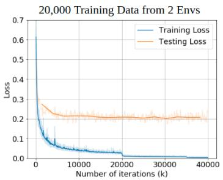
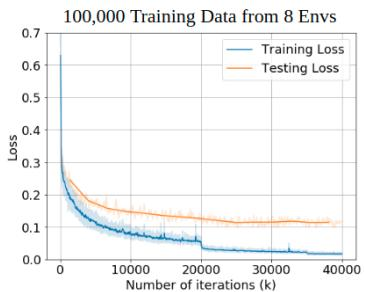
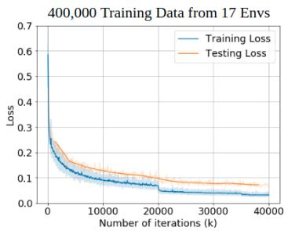
Figure 4: Generalization ability with respect to different quantities of training data. Model is trained on true optical flow. Blue: training loss, orange: testing loss on three unseen environments. Testing loss drops constantly with increasing quantity of training data.
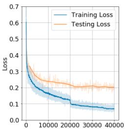
a) Number of iterations (k)
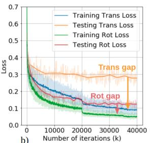
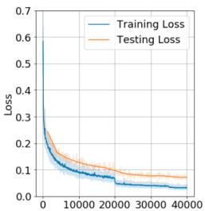
C) Number of iterations (k)
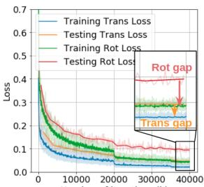
d) Number of iterations (k)
Figure 5: Comparison of the loss curve w/ and w/o up-to-scale loss function. a) The training and testing loss w/o the up-to-scale loss. b) The translation and rotation loss of a). Big gap exists between the training and testing translation losses (orange arrow in b)). c) The training and testing losses w/ up-to-scale loss. d) The translation and rotation losses of c). The translation loss gap decreases.
4.3 Up-to-scale loss function
Without the up-to-scale loss, we observe that there is a gap between the training and testing loss even trained with a large amount of data (Fig. 5-a). As we plotting the translation loss and rotation loss separately (Fig. 5-b), it shows that the translation error is the main contributor to the gap. After we apply the up-to-scale loss function described in Sec 3.3, the translation loss gap decreases (Fig. 5- c,d). During testing, we align the translation with the ground truth to recover the scale using the same way as described in [16, 6].
4.4 Camera intrinsics layer
The IL is critical to the generalization ability across datasets. Before we move to other datasets, we first design an experiment to investigate the properties of the IL using the pose network As shown in Table 1, in the first two columns, where the data has no RCR augmentation, the training and testing loss are low. But these two models would output nonsense values on data with RCR augmentation. One interesting finding is that adding IL doesn’t help in the case of only one type of intrinsics. This indicates that the network has learned a very different algorithm compared with the geometry-based methods, where the intrinsics is necessary to recover the motion. The last two columns show that the IL is critical when the input data is augmented by RCR (i.e. various intrinsics). Another interesting thing is that training a model with RCR and IL leads to a lower testing loss (last column) than only training on one type of intrinsics (first two columns). This indicates that by generating data with various intrinsics, we learned a more robust model for the VO task.
Table 1: Training and testing losses with four combinations of RCR and IL settings. The IL is critical with the presence of RCR. The model trained with RCR reaches lower testing loss than those without RCR.
| Training configuration | w/o RCR, w/o IL | w/o RCR, w/ IL | w/ RCR, w/o IL | w/ RCR, w/ IL |
| Training loss | 0.0325 | 0.0311 | 0.1534 | 0.0499 |
| Test-loss on data w/ RCR | 0.1999 | 0.0723 | ||
| Test-loss on data w/o RCR | 0.0744 | 0.0714 | 0.1630 | 0.0549 |
Table 2: Comparison of translation and rotation on the KITTI dataset. DeepVO [43] is a supervised method trained on Seq 00, 02, 08, 09. It contains an RNN module, which accumulates information from multiple frames. Wang et al. [9] is a supervised method trained on Seq 00-08 and uses the semantic information of multiple frames to optimize the trajectory. UnDeepVO [44] and GeoNet [16] are trained on Seq 00-08 in an unsupervised manner. VISO2-M [45] and ORB SLAM [3] are geometry-based monocular VO. ORB-SLAM uses the bundle adjustment on multiple frames to optimize the trajectory. Our method works in a pure VO manner (only takes two frames). It has never seen any KITTI data before the testing, and yet achieves competitive results.
| Seq | 06 | 07 | 09 | 10 | Ave | |||||
| DeepVO [43]*† | 5.42 | 5.82 | 3.91 | 4.6 | 8.11 | 8.83 | 5.81 | 6.41 | ||
| Wang et al. | 8.04 | 1.51 | 6.23 | 0.97 | 7.14 | 1.24 | ||||
| UnDeepVO [44]* | 6.20 | 1.98 | 3.15 | 2.48 | 10.63 | 4.65 | 6.66 | 3.04 | ||
| GeoNet [16]* | 9.28 | 4.34 | 8.27 | 5.93 | 26.93 | 9.54 | 20.73 | 9.04 | 16.3 | 7.21 |
| VISO2-M [45] | 7.3 | 6.14 | 23.61 | 19.11 | 4.04 | 1.43 | 25.2 | 3.8 | 15.04 | 7.62 |
| ORB-SLAM [3]† | 18.68 | 0.26 | 10.96 | 0.37 | 15.3 | 0.26 | 3.71 | 0.3 | 12.16 | 0.3 |
| TartanVO (ours) | 4.72 | 2.95 | 4.32 | 3.41 | 6.0 | 3.11 | 6.89 | 2.73 | 5.48 | 3.05 |
trel: average translational RMSE drift (%) on a length of 100–800 m.
r : average rotational RMSE drift (◦/100 m) on a length of 100–800 m.
*: the starred methods are trained or finetuned on the KITTI dataset.
†: these methods use multiple frames to optimize the trajectory after the VO process.
4.5 Generalize to real-world data without finetuning
KITTI dataset The KITTI dataset is one of the most influential datasets for VO/SLAM tasks. We compare our model, TartanVO, with two supervised learning models (DeepVO [43], Wang et al. [9]), two unsupervised models (UnDeepVO [44], GeoNet [16]), and two geometry-based methods (VISO2-M [45], ORB-SLAM [3]). All the learning-based methods except ours are trained on the KITTI dataset. Note that our model has not been finetuned on KITTI and is trained purely on a synthetic dataset. Besides, many algorithms use multiple frames to further optimize the trajectory. In contrast, our model only takes two consecutive images. As listed in Table 2, TartanVO achieves comparable performance, despite no finetuning nor backend optimization are performed.
EuRoC dataset The EuRoC dataset contains 11 sequences collected by a MAV in an indoor environment. There are 3 levels of difficulties with respect to the motion pattern and the light condition. Few learning-based methods have ever been tested on EuRoC due to the lack of training data. The changing light condition and aggressive rotation also pose real challenges to geometrybased methods as well. In Table 3, we compare with geometry-based methods including SVO [46], ORB-SLAM [3], DSO [5] and LSD-SLAM [2]. Note that all these geometry-based methods perform some types of backend optimization on selected keyframes along the trajectory. In contrast, our model only estimates the frame-by-frame camera motion, which could be considered as the frontend module in these geometry-based methods. In Table 3, we show the absolute trajectory error (ATE) of 6 medium and difficult trajectories. Our method shows the best performance on the two most difficult trajectories VR1-03 and VR2-03, where the MAV has very aggressive motion. A visualization of the trajectories is shown in Fig. 6.
Challenging TartanAir data TartanAir provides 16 very challenging testing trajectories2 that cover many extremely difficult cases, including changing illumination, dynamic objects, fog and rain effects, lack of features, and large motion. As listed in Table 4, we compare our model with the ORB-SLAM using ATE. Our model shows a more robust performance in these challenging cases.
a)
Table 3: Comparison of ATE on EuRoC dataset. We are among very few learning-based methods, which can be tested on this dataset. Same as the geometry-based methods, our model has never seen the EuRoC data before testing. We show the best performance on two difficult sequences VR1-03 and VR2-03. Note our method doesn’t contain any backend optimization module.
| Seq. | MH-04 | MH-05 | VR1-02 | VR1-03 | VR2-02 | VR2-03 | |
| Geometry-based * | SVO [46] | 1.36 | 0.51 | 0.47 | X | 0.47 | X |
| ORB-SLAM [3] | 0.20 | 0.19 | X | X | 0.07 | X | |
| DSO [5] | 0.25 | 0.11 | 0.11 | 0.93 | 0.13 | 1.16 | |
| LSD-SLAM [2] | 2.13 | 0.85 | 1.11 | X | X | X | |
| Learning-based † | TartanVO (ours) | 0.74 | 0.68 | 0.45 | 0.64 | 0.67 | 1.04 |
* These results are from [46]. † Other learning-based methods [36] did not report numerical results.
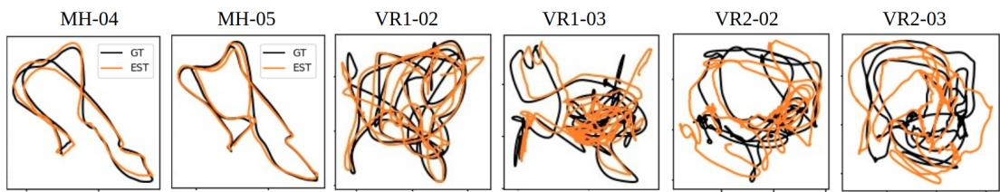
Figure 6: The visualization of 6 EuRoC trajectories in Table 3. Black: ground truth trajectory, orange: estimated trajectory.
Table 4: Comparison of ATE on TartanAir dataset. These trajectories are not contained in the training set. We repeatedly run ORB-SLAM 5 times and report the best result.
| Seq | MH000 | MH001 | MH002 | MH003 | MH004 | MH005 | MH006 | MH007 |
| ORB-SLAM [3] | 1.3 | 0.04 | 2.37 | 2.45 | X | X | 21.47 | 2.73 |
| TartanVO (ours) | 4.88 | 0.26 | 2 | 0.94 | 1.07 | 3.19 | 1 | 2.04 |
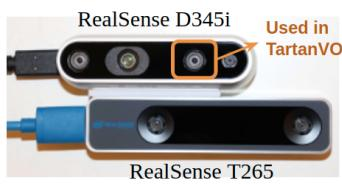
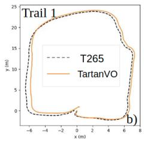
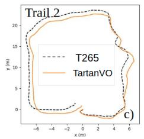
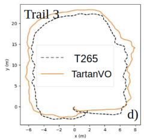
Figure 7: TartanVO outputs competitive results on D345i IR data compared to T265 (equipped with fish-eye stereo camera and an IMU). a) The hardware setup. b) Trail 1: smooth and slow motion. c) Trail 2: smooth and medium speed. d) Trail 3: aggressive and fast motion. See videos for details.
RealSense Data Comparison We test TartanVO using data collected by a customized sensor setup. As shown in Fig. 7 a), a RealSense D345i is fixed on top of a RealSense T265 tracking camera. We use the left near-infrared (IR) image on D345i in our model and compare it with the trajectories provided by the T265 tracking camera. We present 3 loopy trajectories following similar paths with increasing motion difficulties. From Fig. 7 b) to d), we observe that although TartanVO has never seen real-world images or IR data during training, it still generalizes well and predicts odometry closely matching the output of T265, which is a dedicated device estimating the camera motion with a pair of fish-eye stereo camera and an IMU.
5 Conclusions
We presented TartanVO, a generalizable learning-based visual odometry. By training our model with a large amount of data, we show the effectiveness of diverse data on the ability of model generalization. A smaller gap between training and testing losses can be expected with the newly defined up-to-scale loss, further increasing the generalization capability. We show by extensive experiments that, equipped with the intrinsics layer designed explicitly for handling different cameras, TartanVO can generalize to unseen datasets and achieve performance even better than dedicated learning models trained directly on those datasets. Our work introduces many exciting future research directions such as generalizable learning-based VIO, Stereo-VO, multi-frame VO.
Acknowledgments
This work was supported by ARL award #W911NF1820218. Special thanks to Yuheng Qiu and Huai Yu from Carnegie Mellon University for preparing simulation results and experimental setups.
References
[1] J. Fuentes-Pacheco, J. Ruiz-Ascencio, and J. M. Rendon-Mancha. Visual simultaneous localization and´ mapping: a survey. Artificial Intelligence Review, 43(1):55–81, 2015.
[2] J. Engel, T. Schops, and D. Cremers. LSD-SLAM: Large-scale direct monocular slam. In ECCV, 2014
[3] R. Mur-Artal, J. M. M. Montiel, and J. D. Tardos. Orb-slam: a versatile and accurate monocular slam system. IEEE transactions on robotics, 31(5):1147–1163, 2015.
[4] C. Forster, M. Pizzoli, and D. Scaramuzza. Svo: Fast semi-direct monocular visual odometry. In ICRA, pages 15–22. IEEE, 2014.
[5] J. Engel, V. Koltun, and D. Cremers. Direct sparse odometry. IEEE transactions on pattern analysis and machine intelligence, 40(3):611–625, 2017.
[6] T. Zhou, M. Brown, N. Snavely, and D. G. Lowe. Unsupervised learning of depth and ego-motion from video. In CVPR, 2017.
[7] S. Vijayanarasimhan, S. Ricco, C. Schmidy, R. Sukthankar, and K. Fragkiadaki. Sfm-net: Learning of structure and motion from video. In arXiv:1704.07804, 2017.
[8] S. Wang, R. Clark, H. Wen, and N. Trigoni. End-to-end, sequence-to-sequence probabilistic visual odometry through deep neural networks. The International Journal of Robotics Research, 37(4-5):513–542, 2018.
[9] X. Wang, D. Maturana, S. Yang, W. Wang, Q. Chen, and S. Scherer. Improving learning-based egomotion estimation with homomorphism-based losses and drift correction. In 2019 IEEE/RSJ International Conference on Intelligent Robots and Systems (IROS), pages 970–976. IEEE, 2019.
[10] G. Younes, D. Asmar, E. Shammas, and J. Zelek. Keyframe-based monocular slam: design, survey, and future directions. Robotics and Autonomous Systems, 98:67–88, 2017.
[11] W. Wang, D. Zhu, X. Wang, Y. Hu, Y. Qiu, C. Wang, Y. Hu, A. Kapoor, and S. Scherer. Tartanair: A dataset to push the limits of visual slam. In 2020 IEEE/RSJ International Conference on Intelligent Robots and Systems (IROS), 2020.
[12] R. Roberts, H. Nguyen, N. Krishnamurthi, and T. Balch. Memory-based learning for visual odometry. In Robotics and Automation, 2008. ICRA 2008. IEEE International Conference on, pages 47–52. IEEE, 2008.
[13] V. Guizilini and F. Ramos. Semi-parametric models for visual odometry. In Robotics and Automation (ICRA), 2012 IEEE International Conference on, pages 3482–3489. IEEE, 2012.
[14] T. A. Ciarfuglia, G. Costante, P. Valigi, and E. Ricci. Evaluation of non-geometric methods for visual odometry. Robotics and Autonomous Systems, 62(12):1717–1730, 2014.
[15] K. Tateno, F. Tombari, I. Laina, and N. Navab. Cnn-slam: Real-time dense monocular slam with learned depth prediction. In Proceedings of the IEEE Conference on Computer Vision and Pattern Recognition, pages 6243–6252, 2017.
[16] Z. Yin and J. Shi. Geonet: Unsupervised learning of dense depth, optical flow and camera pose. In Proceedings of the IEEE Conference on Computer Vision and Pattern Recognition (CVPR), volume 2, 2018.
[17] H. Zhan, R. Garg, C. S. Weerasekera, K. Li, H. Agarwal, and I. Reid. Unsupervised learning of monocular depth estimation and visual odometry with deep feature reconstruction. In Proceedings of the IEEE Conference on Computer Vision and Pattern Recognition, pages 340–349, 2018.
[18] A. Ranjan, V. Jampani, L. Balles, K. Kim, D. Sun, J. Wulff, and M. J. Black. Competitive collaboration: Joint unsupervised learning of depth, camera motion, optical flow and motion segmentation. In Proceedings of the IEEE/CVF Conference on Computer Vision and Pattern Recognition (CVPR), June 2019.
[19] G. Costante, M. Mancini, P. Valigi, and T. A. Ciarfuglia. Exploring representation learning with cnns for frame-to-frame ego-motion estimation. RAL, 1(1):18–25, 2016.
[20] B. Ummenhofer, H. Zhou, J. Uhrig, N. Mayer, E. Ilg, A. Dosovitskiy, and T. Brox. Demon: Depth and motion network for learning monocular stereo. In Proceedings of the IEEE Conference on Computer Vision and Pattern Recognition (CVPR), July 2017.
[21] N. Yang, L. v. Stumberg, R. Wang, and D. Cremers. D3vo: Deep depth, deep pose and deep uncertainty for monocular visual odometry. In IEEE/CVF Conference on Computer Vision and Pattern Recognition (CVPR), June 2020.
[22] Y. Zou, Z. Luo, and J.-B. Huang. Df-net: Unsupervised joint learning of depth and flow using cross-task consistency. In Proceedings ofthe European Conference on Computer Vision (ECCV), September 2018.
[23] H. Zhou, B. Ummenhofer, and T. Brox. Deeptam: Deep tracking and mapping. In Proceedings of the European Conference on Computer Vision (ECCV), September 2018.
[24] C. Tang and P. Tan. Ba-net: Dense bundle adjustment network. arXiv preprint arXiv:1806.04807, 2018.
[25] R. Clark, M. Bloesch, J. Czarnowski, S. Leutenegger, and A. J. Davison. Ls-net: Learning to solve nonlinear least squares for monocular stereo. arXiv preprint arXiv:1809.02966, 2018.
[26] H. Li, W. Chen, j. Zhao, J.-C. Bazin, L. Luo, Z. Liu, and Y.-H. Liu. Robust and efficient estimation of absolute camera pose for monocular visual odometry. In Proceedings ofthe IEEE International Conference on Robotics and Automation (ICRA), May 2020.
[27] K. Tateno, F. Tombari, I. Laina, and N. Navab. Cnn-slam: Real-time dense monocular slam with learned depth prediction. In Proceedings of the IEEE Conference on Computer Vision and Pattern Recognition (CVPR), July 2017.
[28] L. Sheng, D. Xu, W. Ouyang, and X. Wang. Unsupervised collaborative learning of keyframe detection and visual odometry towards monocular deep slam. In Proceedings of the IEEE/CVF International Conference on Computer Vision (ICCV), October 2019.
[29] H. Zhan, C. S. Weerasekera, J.-W. Bian, and I. Reid. Visual odometry revisited: What should be learnt? In Proceedings ofthe IEEE International Conference on Robotics and Automation (ICRA), May 2020.
[30] C. Wang, J. M. Buenaposada, R. Zhu, and S. Lucey. Learning depth from monocular videos using direct methods. In Proceedings ofthe IEEE Conference on Computer Vision and Pattern Recognition (CVPR), June 2018.
[31] Y. Wang, P. Wang, Z. Yang, C. Luo, Y. Yang, and W. Xu. Unos: Unified unsupervised optical-flow and stereo-depth estimation by watching videos. In Proceedings of the IEEE/CVF Conference on Computer Vision and Pattern Recognition (CVPR), June 2019.
[32] R. Mahjourian, M. Wicke, and A. Angelova. Unsupervised learning of depth and ego-motion from monoc ular video using 3d geometric constraints. In Proceedings of the IEEE Conference on Computer Vision and Pattern Recognition (CVPR), June 2018.
[33] S. Li, X. Wang, Y. Cao, F. Xue, Z. Yan, and H. Zha. Self-supervised deep visual odometry with online adaptation. In Proceedings of the IEEE/CVF Conference on Computer Vision and Pattern Recognition (CVPR), June 2020.
[34] D. Nister. An efficient solution to the five-point relative pose problem. ´ IEEE transactions on pattern analysis and machine intelligence, 26(6):756–770, 2004.
[35] A. Geiger, P. Lenz, C. Stiller, and R. Urtasun. Vision meets robotics: The kitti dataset. The International Journal ofRobotics Research, 32(11):1231–1237, 2013.
[36] M. Burri, J. Nikolic, P. Gohl, T. Schneider, J. Rehder, S. Omari, M. W. Achtelik, and R. Siegwart. The euroc micro aerial vehicle datasets. The International Journal of Robotics Research, 35(10):1157–1163, 2016.
[37] M. Cordts, M. Omran, S. Ramos, T. Rehfeld, M. Enzweiler, R. Benenson, U. Franke, S. Roth, and B. Schiele. The cityscapes dataset for semantic urban scene understanding. In Proceedings of the IEEE conference on computer vision and pattern recognition, pages 3213–3223, 2016.
[38] J. Tobin, R. Fong, A. Ray, J. Schneider, W. Zaremba, and P. Abbeel. Domain randomization for transferring deep neural networks from simulation to the real world. In IROS, pages 23–30. IEEE, 2017.
[39] J. Tremblay, A. Prakash, D. Acuna, M. Brophy, V. Jampani, C. Anil, T. To, E. Cameracci, S. Boochoon, and S. Birchfield. Training deep networks with synthetic data: Bridging the reality gap by domain randomization. In CVPR Workshops, pages 969–977, 2018.
[40] D. Sun, X. Yang, M.-Y. Liu, and J. Kautz. Pwc-net: Cnns for optical flow using pyramid, warping, and cost volume. In Proceedings of the IEEE conference on computer vision and pattern recognition, pages 8934–8943, 2018.
[41] K. He, X. Zhang, S. Ren, and J. Sun. Deep residual learning for image recognition. In Proceedings ofthe IEEE conference on computer vision and pattern recognition, pages 770–778, 2016.
[42] A. Paszke, S. Gross, S. Chintala, G. Chanan, E. Yang, Z. DeVito, Z. Lin, A. Desmaison, L. Antiga, and A. Lerer. Automatic differentiation in pytorch. In NIPS-W, 2017.
[43] S. Wang, R. Clark, H. Wen, and N. Trigoni. Deepvo: Towards end-to-end visual odometry with deep recurrent convolutional neural networks. In Robotics and Automation (ICRA), 2017 IEEE International Conference on, pages 2043–2050. IEEE, 2017.
[44] R. Li, S. Wang, Z. Long, and D. Gu. Undeepvo: Monocular visual odometry through unsupervised deep learning. In 2018 IEEE International Conference on Robotics and Automation (ICRA), pages 7286–7291. IEEE, 2018.
[45] S. Song, M. Chandraker, and C. Guest. High accuracy monocular SFM and scale correction for autonomous driving. IEEE Transactions on Pattern Analysis & Machine Intelligence, pages 1–1, 2015.
[46] C. Forster, Z. Zhang, M. Gassner, M. Werlberger, and D. Scaramuzza. Svo: Semidirect visual odometry for monocular and multicamera systems. IEEE Transactions on Robotics, 33(2):249–265, 2016.
A Additional experimental details
In this section, we provide additional details for the experiments, including the network structure, training parameters, qualitative results, and quantitative results.
A.1 Network Structure
Our network consists of two sub-modules, namely, the matching network and the pose network As mentioned in the paper, we employ PWC-Net as the matching network, which takes in two consecutive images of size 640 x 448 (PWC-Net only accepts image size that is multiple of 64). The output optical flow, which is 160 x 112 in size, is fed into the pose network. The structure of the pose network is detailed in Table 5. The overall inference time (including both and is 40ms on an NVIDIA GTX 1080 GPU.
Table 5: Parameters of the proposed pose network. Constructions of residual blocks are designated in brackets multiplied by the number of stacked blocks. Downsampling is performed by Conv1, and at the beginning of each residual block. After the residual blocks, we reshape the feature map into a one-dimensional vector, which goes through three fully connected layers in the translation head and rotation head, respectively.
| Name | Layer setting | Output dimension | |||
| Input | |||||
| Conv1 | |||||
| Conv2 | |||||
| Conv3 | |||||
| ResBlock | |||||
| Block1 | ×3 | ||||
| Block2 | ×4 | ||||
| Block3 | 3 × 3, 1283 × 3, 128 | ×6 | |||
| Block4 | 3 × 3, 2563 × 3,256 | ||||
| Block5 | 3 × 3, 2563 × 3,256 | ||||
| FC_trans | FC_ro | t | |||
| Trans_head_fc1 | Rot_head_fc1 | ||||
| Trans_head_fc2 | Rot_head_fc2 | ||||
| Trans_head_fc3 | Rot_head_fc3 | ||||
| Output | 3 | Output | 3 | ||
Table 6: Comparison of ORB-SLAM and TartanVO on the TartanAir dataset using the ATE metric. These trajectories are not contained in the training set. We repeatedly run ORB-SLAM for 5 times and report the best result.
| Seq | SH000 | SH001 | SH002 | SH003 | SH004 | SH005 | SH006 | SH007 |
| ORB-SLAM | X | 3.5 | X | X | X | X | X | X |
| TartanVO (ours) | 2.52 | 1.61 | 3.65 | 0.29 | 3.36 | 4.74 | 3.72 | 3.06 |
A.2 Testing Results on TartanAir
TartanAir provides 16 challenging testing trajectories. We reported 8 trajectories in the experiment section. The rest 8 trajectories are shown in Table 6. We compare TartanVO against the ORB-SLAM monocular algorithm. Due to the randomness in ORB-SLAM, we repeatedly run ORB-SLAM for 5 trials and report the best result. We consider a trial is a failure if ORB-SLAM tracks less than 80% of the trajectory. A visualization of all the 16 trajectories (including the 8 trajectories shown in the experiment section) is shown in Figure 8.
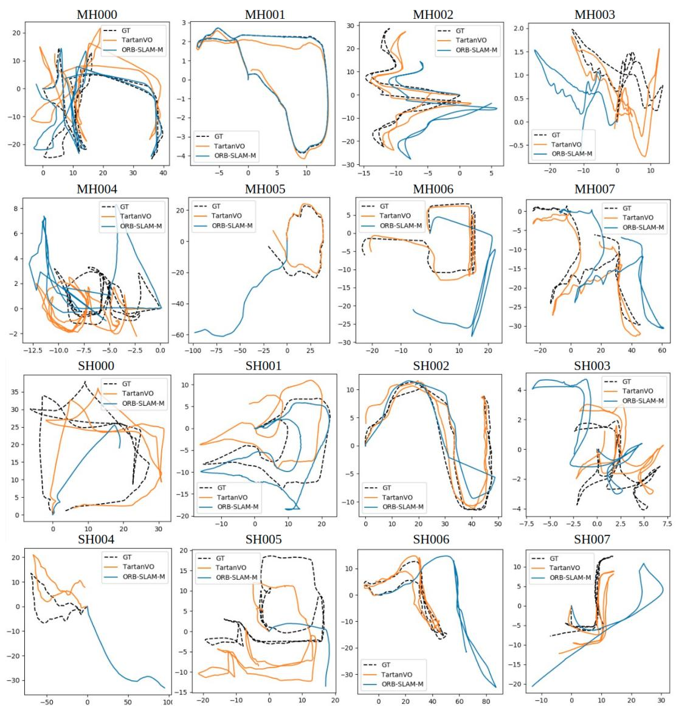
Figure 8: Visualization of the 16 testing trajectories in the TartanAir dataset. The black dashed line represents the ground truth. The estimated trajectories by TartanVO and the ORB-SLAM monocular algorithm are shown in orange and blue lines, respectively. The ORB-SLAM algorithm frequently loses tracking in these challenging cases. It fails in 9/16 testing trajectories. Note that we run full-fledge ORB-SLAM with local bundle adjustment, global bundle adjustment, and loop closure components. In contrast, although TartanVO only takes in two images, it is much more robust than ORB-SLAM.
md/2021_TartanVO.md 预渲染生成（OCR 语料，插图取自原文）。
公式以 MathML 呈现，浏览器原生渲染，不依赖外部脚本或字体 CDN。